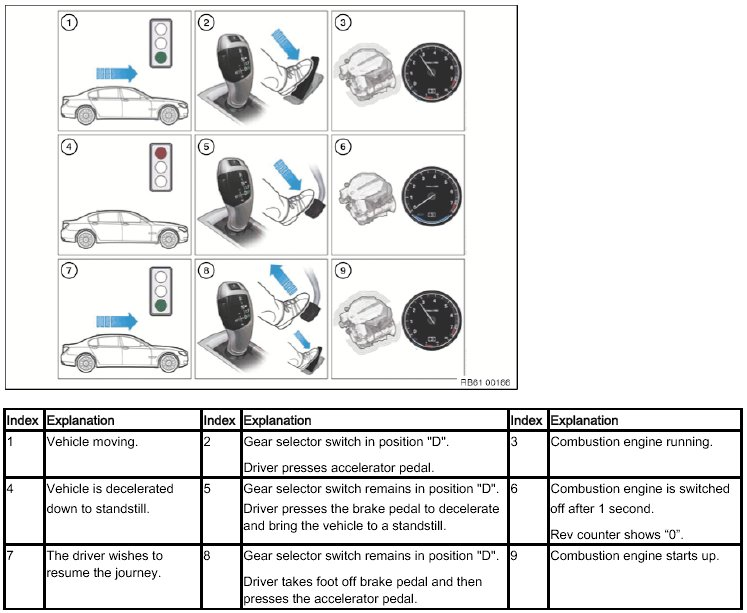
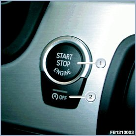
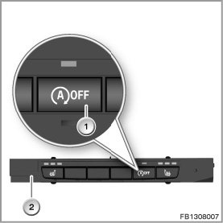
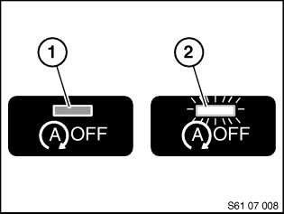

61 01 07 (629) Automatic Engine Start-Stop Function
61 01 07 (629) Automatic Engine Start-Stop Function
Automatic transmission, twin-clutch gearbox
Situation:
As a "BMW EfficientDynamics" measure, the automatic engine start-stop function (development code: Automatic Engine Start- Stop = MSA) helps to reduce fuel consumption and CO2 emissions. The combustion engine is switched off and on automatically under certain conditions.
Vehicles concerned:
The automatic engine start-stop function in will be phased in as from 04/2010 in connection with the twin-clutch gearbox in the M3 (E9x) and automatic transmission in the F04.
NOTE: The automatic engine start-stop function is also installed as standard on these vehicles.
Procedure:
NOTE: The following description only deals with variations and special features compared to the automatic engine start-stop function already known for the manual gearbox. Further detailed information on the automatic engine start-stop function can be found in the following documents:
- Safety information for working on vehicles with automatic engine start-stop system (MSA)
- Service Information Automatic engine start-stop function (manual gearbox) , SI number 610107335
- Functional description Automatic engine start-stop function (MSA), 2nd generation
Functional sequence ASSF (automatic engine start-stop function)

Prerequisites of an automatic engine shutdown
The automatic engine start-stop function will only stop or start the engine if certain prerequisites are met.
Engine shutdown
The engine is switched off when:
- The vehicle is stationary (speed < 0 kmh).
- The engine speed is virtually at idle speed.
- The vehicle has been driven at > 10 km/h since the engine was last shut down.
- The vehicle has been driven at 10 km/h since the last change at terminal 15.
- The brake is pressed.
- Steering wheel movement is not moved. Steering wheel must be aligned straight.
Engine start
The engine is started automatically when:
- Brake pedal is released or the accelerator pedal is pressed.
NOTE: The aforementioned criteria apply only to the automatic engine start-stop function, in other words, not if the engine has been switched off with the SST (START STOP button).
Switch-off inhibitors and switch-on prompts
Besides its main function of propelling the vehicle, the internal combustion engine has to provide other auxiliary functions.
These auxiliary functions are necessary for maintaining operating safety and convenience functions and complying with emissions requirements.
Certain prerequisites are therefore governed by switch-off inhibitors and switch-on prompts, either preventing the engine from being shut down or prompting an engine restart.
NOTE: The customer should be alerted to possible switch-on prompts (engine starts without customer's intervention).
Switch-off inhibitors
The engine continues running although the vehicle is at standstill and held with the brake pedal.
The following preconditions act as switch-off inhibitors and prevent the engine from shutting down:
- Engine adaptation (e.g. cylinder adjustment)
- Regeneration of the diesel particulate filter
- Carbon canister needs purging
- Insufficient knock resistance of fuel
- Engine fault
- Engine coolant temperature
- below a defined value (depending on engine version approx. 20 - 60 °C)
- above a defined value (depending on engine version approx. 100 - 130 °C)
- Automatic transmission not ready
- Gearbox adaptation active
- Drive position "S", "M", "N", "R"
- Driving surface incline too great
- Assist system active (Active Cruise Control, Parking Assist, Hill Descent Control)
- Stop-and-go driving
- Last MSA stop was too long
- Air conditioning requirements:
- Automatic air conditioning: MAX AC button pressed
- Automatic air conditioning: Defrost button pressed (request to defrost the windscreen)
- Air conditioning system: high blower speed and low blower temperature, compressor button pressed
- Air conditioning system: high blower speed and air distribution directed to windscreen, compressor actuated
- Ambient temperature d 3 °C
- Engine speed > 1200 rpm
- Battery condition:
- State of charge too low
- Measured battery state of charge not plausible
- Battery temperature too high (approx. 50 °C)
- Starting voltage drop from previous ASSF start too low
- Vehicle rolling
Hybrid cars:
- High voltage power management: Temperature too low or too high
- Load on vehicle electrical system too high
- High-voltage battery unit: State of charge too low or too high
- Hybrid system fault
Switch-on requesters
The following preconditions result in an engine start:
- Vehicle starting to roll
- Steering wheel turned
- Switching the drive position (to S , M , N , R with automatic transmission; "S", "D", "N", "R" with DKG; "N", "R" with DKG M3 US version)
- Power management: State of battery charge too low, battery temperature too high, power requirement of active electrical loads too high
- Air conditioning requirements - cooling
- Partial vacuum in brakes not low enough
Hybrid cars:
- High voltage power management: Temperature too low or too high
- Load on vehicle electrical system too high
- High-voltage battery unit: State of charge too low or too high
- Hybrid system fault
Safety requirements
Following preconditions deactivate the automatic engine start-stop function:
- Engine compartment lid is raised.
- Driver leaves vehicle: Secured by door contact, seat belt buckle and brake pedal
- Vehicle towed away
- Ignition key is no longer detected
- MSA button
- Battery not learned (battery data may be lost after changing the battery, disconnecting the battery or programming the engine control)
NOTE: Renewed starting is always possible via the start/stop button.
IMPORTANT: Even if the seat belt is not fastened and the bonnet is open, the engine can still start if the vehicle's speed exceeds 5 km/h.
ASSF button
NOTE: No Start/Stop button is fitted in the F04. On this vehicle, the automatic engine start-stop function is an integral part of the high voltage system.
New generation ASSF button:

The ASSF button (2) is arranged below the Start/Stop button.
The automatic engine start-stop function can be deactivated manually with the ASSF button (2). The automatic engine start-stop function is activated with every terminal change (terminal 15 on) and with the engine stationary or if the ASSF button (2) is pressed repeatedly.
ASSF button on the M3 (E9x):

On the M3, the ASSF button (1) is integrated in the centre console control panel (2).
Pressing the ASSF button:

ASSF button not pressed (1) - LED off
The Auto Start Stop function is active each time the engine has been restarted.
Notes for Service department
The Auto Start Stop function will only operate in certain conditions.
The function includes an automatic feature that examines the safety and comfort-based conditions that govern an engine start or engine stop.
NOTE: In the event of customer queries, always check these prerequisites against the Checklist in Annex 1.